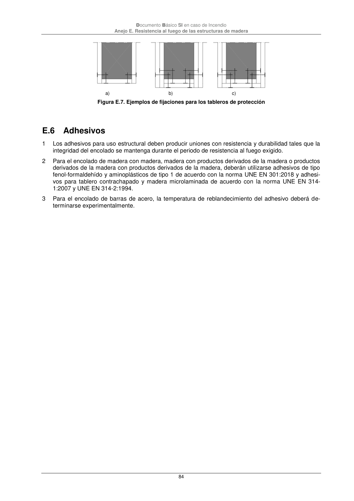

DB-SI · E.6 Adhesivos · versión 2025-03-04
SHA256: 0a2e78cd62471d9cc5cfe2efbc6aa39fdbad73c124aea7b039f9de96c141e105 · página física 84 de 92 · métodos de encabezado
solo si están cotejados.
Formatos: Markdown · JSON de bloques · PDF p. 84 · imagen PNG
Documento Básico SI en caso de Incendio Anejo E. Resistencia al fuego de las estructuras de madera 84 a) b) c) Figura E.7. Ejemplos de fijaciones para los tableros de protección E.6 Adhesivos 1 Los adhesivos para uso estructural deben producir uniones con resistencia y durabilidad tales que la integridad del encolado se mantenga durante el periodo de resistencia al fuego exigido. 2 Para el encolado de madera con madera, madera con productos derivados de la madera o productos derivados de la madera con productos derivados de la madera, deberán utilizarse adhesivos de tipo fenol-formaldehído y aminoplásticos de tipo 1 de acuerdo con la norma UNE EN 301:2018 y adhesi- vos para tablero contrachapado y madera microlaminada de acuerdo con la norma UNE EN 314- 1:2007 y UNE EN 314-2:1994. 3 Para el encolado de barras de acero, la temperatura de reblandecimiento del adhesivo deberá de- terminarse experimentalmente.
